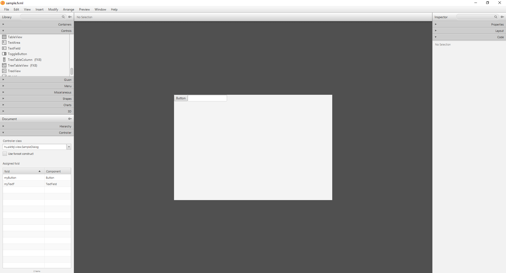
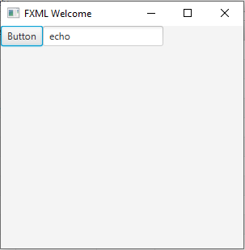

4. gyakorlat¶
Korábban láttuk, hogy hogyan lehet a JavaFX API-t felhasználni arra, hogy grafikus felhasználói felületeket hozzunk létre. Ebben a fejezetben azt nézzük meg, hogy hogyan lehet ezt másképpen deklaratív módon megadni, melyért az FXML felelős.
FXML¶
Az FXML nem más, mint egy XML alapú leíró nyelv, mely segítségével JavaFX alkalmazások esetén a felhasználói felületek szerkezete leírható, az alkalmazás kódtól teljesen elkülönítve, tehát az FXML felelős a mit kérdésre válaszolni, de a viselkedést már nem itt adjuk meg hanem Java kódban.
Tekintsük a következő JavaFX API-val összerakott felületet!
1 2 3 4 5 6 | |
Ennek a felületnek az FXML megfelelője:
1 2 3 4 5 6 7 8 9 10 11 12 | |
FXML állományokat a *.fxml kiterjesztésű fájlokban tároljuk.
Az első sort már ismerjük (prolog sor), mely után az importok következnek, majd maguk grafikus komponensek.
Megjegyzés
Az FXML általánosabb értelemben is használható, mivel az egy szerializálási formája a Java objektumoknak, azaz nem csak a JavaFX GUI elemeinek leírására használható, hanem tetszőleges Java objektumok állapotának mentésére.
Amennyiben a fenti XML alapú fájlt manuálisan kellene szerkesztenünk, akkor nyilván inkább a JavaFX API-t választanánk nagy többséggel, ugyanakkor az egyszerű formája miatt lehetőség van arra, hogy különböző eszközökkel grafikusan állítsuk elő a felhasználói interfészeket. Erre a célra készült a SceneBuilder, melynek segítségével "összehúzogathatjuk" a grafikus elemeket (WYSWYG eszköz).
A SceneBuilder-t az IntelliJ alapból felkínálja az *.fxml kiterjesztésű fájlok szerkesztéséhez, ám a telepített eszköz futtatható fájlját be kell állítani a Settings->Languages&Frameworks->JavaFX->Path to SceneBuilder segítségével.
Ezután tetszőleges FXML fájlon jobb kattintás, és a legalsó menüpont a SceneBuilder, ami megnyitja az állományt a vizuális szerkesztővel.

Megjegyzés
Az IntelliJ-n belül is lehet használni a SceneBuilder-t, mint bundle-t, de ekkor néhány funkcióhoz nem férünk hozzá.
Az FXML alapjait egy kis példa feladaton fogjuk bemutatni.
Feladat (01_fxml-basic)
Hozzuk létre a SceneBuilder segítségével az alábbi felhasználói felületet! A nyomógomb megnyomására a szövegmezőben lévő szöveg íródjon ki konzolra.

Feladat lépései:
- Induljunk ki egy üres JavaFX projektből (amennyiben archetype-ból indulunk ki, akkor töröljünk ki mindent)!
- Hozzunk létre egy sample.fxml fájlt a
src/main/resources/hu/alkfejlmappában! - Nyissuk meg SceneBuilder-ben a fájlt (jobb klikk az fxml fájlon -> Open In SceneBuilder)
- Állítsuk össze az ablakot (
HBox-on belül egy gomb és egyTextField) - Cseréljük a gomb feliratát (Properties fül alatt), és állítsunk be
fx:id-t az elemeknek (Inspector -> Code) - Mentsük el, és tanulmányozzuk a generált fxml-t!
- Az
App.java-ban töltsük be az FXML-et, és cseréljük le a SceneGraph-ot a betöltöttre - Adjuk meg controller-t class-nak a
hu.alkfejl.Apposztályt - Vegyünk fel egy
handleEchoeseménykezelőt a gombhoz - Implementáljuk a metódust úgy, hogy gombnyomás hatására a szövegmező tartalma képernyőre íródjon (FXML dependency
pom.xml-be, és FXML annotációk)
1 2 3 4 5 6 7 8 9 10 11 12 13 | |
Ez a kódrészlet annak felel meg, mintha létrehoznánk egy HBox, egy Button és egy TextField komponenst, és a Buttont-t, valamint a TextField-et hozzáadnánk a HBox gyerekeihez.
A generált FXML eléggé intuitív ahhoz, hogy értelmezni lehessen, ugyanakkor néhány elemet érdemes közelebbről megnéznünk.
Az import sorok tervezési időben informálják a SceneBuilder-t vagy a betöltéskor az FXMLLoader-t, hogy mely JavaFX osztályokat kell behúzni, kvázi egyenértékű a sima Java-s importtal.
Figyelem
Az FXML tartalma nincs séma által validálva (XSD). A használt XML namespace-ekre azért van szükség, hogy azok segítsék az FXMLLoader, a SceneBuilder, illetve az IDE-k működését.
A példában az fx prefixet két helyen használjuk:
fx:controller: A legfelső elemen adhatjuk meg, mely futás időben informálja az alkalmazásunkat, hogy melyik controller-el működik együtt ez az FXML állomány. Itt tudjuk megadni majd az eseménykezelő metódusokat az adott elemekhez, mármint a tényleges metódus definíciókat. Fontos, hogy az itt megadott kontroller osztályt az FXMLLoader példányosítja.fx:id: Minden elemhez hozzárendelhető, mely egyedileg azonosítja az FXML-ben megadott Node-ot. Betöltés után a Node-okat ezen a néven érhetjük el (ilyen nevű field-eket kell majd használnunk a controller-ben is, ha szeretnénk az adott Node-ot a Java kódból is használni, máskülönben elhagyható mind a field, mind azfx:idmegadás).
Az FXML-ben az eseménykezelőket is megadhatjuk, melyek definíciója a controller-ben van.
A JavaFX API-tól eltérően itt a set előtagot nem kell kiírnunk.
Tehát például a setOnAction()-ből csak szimplán onAction attribútum lesz az FXML-en belül.
Az attribútumban az eseménykezelő metódus nevét kell megadnunk, illetve az elé egy # jelet is el kell helyeznünk (amennyiben az eseménykezelő definíciója magában az FXML-ben van megadva, például, fx:script tag-ek között, akkor nem kell kiírni a # prefixet).
1 | |
A megadott metódusoknak alapvetően illeszkedniük kell az EventHandler<T> interfész void handle(T event) metódusához, ahol a T típus az eseménynek megfelelően van megadva (gombnyomás esetén ActionEvent, egéresemények esetén MouseEvent, stb.).
Az event paraméter el is hagyható abban az esetben, ha nincs rá szükségünk.
Megjegyzés
Az eseménykezelőket nem csak a controllerben tudjuk megadni. Lehetőség van arra is, hogy magában az FXML-ben adjunk meg eseménykezelőket:
1 2 3 4 5 6 7 8 9 10 11 12 13 | |
Controller¶
Az FXML-ben összeállított user interface elmeivel természetesen továbbra is szeretnénk az alkalmazásból kommunikálni, de hogyan érhetjük el őket Java kódból, ha az elemeket FXML-ből dinamikusan tölti be az FXMLLoader, és nem mi hoztuk kézzel létre a kódban a megfelelő GUI komponens típusú változókat?
A megoldás az @FXML annotáció használata, mely a field neve alapján és az FXML-ben található fx:id alapján kezdeményezi az összeköttetést.
Amennyiben a controller-ben ellátunk field-eket/metódusokat a @FXML marker annotációval, akkor a field-eket/metódusokat a SceneBuilder-ben is látni fogjuk és megadhatjuk őket id-ként, illetve eseménykezelőként.
Megjegyzés
Amit a @FXML annotációval ellátunk nem szükséges, hogy public láthatósággal bírjon. Az annotáció alkalmazása az FXML-ben láthatóvá teszi akár a private field-eket és metódusokat is.
1 2 3 4 | |
Az FXML és a kód közti kapcsolatot az annotáció teremti meg, ám ahhoz hogy automatikusan tudja melyik FXML-ben deklarált TextField-et kell a változóval összekötni, a változó nevének meg kell egyeznie az FXML-ben deklarált elem fx:id attribútumával!
Az FXML annotáció használatához ráadásul egy új függőséget is fel kell vennünk a POM.xml-be:
1 2 3 4 5 | |
FXML betöltés¶
Az FXML-ben leírt user interface-eket be kell tölteni az alkalmazás kódban, hogy az ott leírt felület létrejöjjön, és a SceneGraph előálljon belőle, amit aztán a szokásos módon meg tudunk jeleníteni egy Stage tartalmaként.
Erre a feladatra a Java kódban az FXMLLoader-t használjuk.
1 2 3 4 5 6 7 8 9 | |
Tipp
A sample.fxml fájlnak elérhetőnek kell lennie a class mellett, amit legegyszerűbben úgy tudunk elérni, hogy az FXML állományokat az src/main/resources mappa alá gyűjtjük ugyanolyan mappa szerkezetben, amilyenben a betöltést végző osztály csomag hierarchiája megkövetel.
A betöltött FXML tartalmat aztán felhasználhatjuk egy az egyben Scene Graph-ként (mivel, hogy az is) és mint ahogyan a fenti példában akár lehet ez a root node-ja egy Scene-nek, de az is előfordulhat, hogy csak egy részfát töltünk be egy FXML-ből és az része lesz egy komplexebb felületnek (újrafelhasználásnál jól jöhet).
Fontos, hogy az FXML állományokat futás közben tölti be az FXMLLoader, így csak ebben a pillanatban tudjuk meg, hogy az adott állomány megfelel-e az FXML specifikációjának.
Az FXMLLoader-nek van statikus load metódusa is, de javallott a fent bemutatott módon használni, azaz példányosítani, mivel így kérhetünk referenciát a controller-re is, mely sokszor jó szolgálatot tesz.
Ez azt is jelenti, hogy direktben nekünk nem kell példányosítanunk a controller-t, mivel azt elvégzi helyettünk az FXMLLoader.
A halandó embereknek általában elég lesz ez a sima konstruktor, mely az FXML állományra várja az URL hivatkozást, de érdemes lehet a többi konstruktort is megnézni, mert van például, ami képes ResourceBundle-t fogadni, mely a többnyelvű alkalmazások írását támogatja.
Például:
1 2 3 | |
Ezután az FXML-ben található text-eknél megadhatunk %_msg_id alakú attribútumokat, ahol msg_id a nyelvi fájlokban az adott kulcs értéke. Például:
1 | |
mely szöveg megfelelője a messages_en.properties fájlban:
1 | |
A ResourceBundle-on felül megadhatunk a builderFactory-t, melyet az FXMLLoader használ a különböző típusú Node-ok létrehozásakor, illetve ennek megfelelően az alapértelmezett callback-et is felülírhatjuk, mely a controller visszaadását valósítja meg (alapvetően a paraméteres konstruktorral példányosítja a controller-t a rendszer, de így felül tudjuk ezt is írni).
Ezen felül még az FXML dokumentumok parse-olásakor használt karakterkódolást is megadhatjuk (alapértelmezett UTF-8), továbbá a betöltéshez használandó egyéb loader-eket.
A fenti sorrendben megadott lehetséges paraméterekkel a legbővebb konstruktor a következő módon néz ki:
1 2 3 4 5 6 7 8 | |
Az első két paramétert használjuk a leggyakrabban, a többit csak nagyon speciális esetben kell használnunk.
Az FXMLLoader objektumokon a fenti konstruktor paraméterek alapján getter és setter metódusok is segítik a munkát, azaz egy-egy elem később is beállítható a hozzátartozó setter-el (pl.: setLocation(URL url)), illetve később lekérhető az értéke (pl.: getCharset()).
Megjegyzés
Az FXMLLoader load() metódusa generikus, mely segítségével megadhatjuk a root node típusát.
Például:
1 | |
Az FXMLLoader továbbá támogatja az InputStream-ből történő beolvasást is.
Az FXMLLoader használata során, amikor betöltjük az FXML dokumentumot, akkor sokszor szükség lehet arra, hogy az FXML-ben megadott grafikus elemeknek valamilyen kezdőértéket adjunk.
Amennyiben a konstruktorban próbáljuk beállítani az értékeket, akkor nagy valószínűséggel NullPointerException-el találjuk szembe magunkat, mivel a field injektálások még nem történnek meg ilyenkor.
Szerencsére van egy egyszerű megoldás erre a problémára, mivel az FXMLLoader automatikusan meghívja az initialize() metódust, akkor amikor a field injektálások megtörténtek.
Az initailize() metódus felüldefiniálásához implementáljuk a javafx.fxml.Initializable interfészt!
1 2 3 4 5 6 7 | |
Feladat
Hozzunk létre egy új projektet IntelliJ-n belül, melynek során a javafx-archetype-fxml-t adjuk meg mint projekt archetype!
Próbáljuk meg megérteni a kapott projekt vázat!
Megoldás

FXML nyalánkságok¶
A következőkben olyan FXML feature-ök kerülnek bemutatásra, amelyek megkönnyíthetik a munkánkat, de nélkülük is teljes életet élhetünk.
Újrafelhasználható objektumok megadása¶
Az FXML-ben megadhatunk olyan elemeket, amiket többször is szeretnénk felhasználni.
Ezeket az fx:define között kell megadnunk, majd később az fx:id-ban megadott azonosítót használhatjuk fel úgy, hogy az elé egy $ jelet rakunk.
1 2 3 4 5 6 7 8 9 10 11 12 13 14 15 16 17 18 19 | |
A $-al kezdődő megadásokat a rendszer objektum referenciaként kezeli.
Amennyiben a $ az azonosító részét képezi akkor escape-eljük \$-al!
Location megadása¶
A @-al kezdődő attribútum értékek mindig egy helyre (fájlra, pl.: egy képre, vagy FXML állományra) mutatnak.
A @/-el kezdődő megadás a classpath-hoz viszonyított relatív megadási mód.
Amennyiben / nélkül használjuk akkor az adott FXML fájlhoz viszonyított relatív megadási módot követünk.
A következő példában egy ImageView-ban megjeleníteni kívánt kép URL-jét adjuk meg (classpath-hoz viszonyítva):
1 2 3 | |
FXML include¶
Az FXML dokumentumok között használhatunk include-ot is, azaz az egyik FXML dokumentumból használhatunk egy másikat include formájában. Ennek formája a következő:
1 | |
A szabály az, hogy minden FXML dokumentumnak egy kontrollere lehet. Amikor egymásba ágyazunk FXML dokumentumokat, akkor is mindegyiknek lehet saját kontroller osztálya.
Konstansok használata¶
Az FXML-ben felhasználhatjuk a Java osztályokban megadott static final konstansok értékét.
Ezeket az értékeket az fx:constant-al hivatkozhatjuk.
Például a Long osztály MAX_VALUE értékét a következőképpen használhatjuk:
1 | |
Egy nagyobb példaként tekintsük a következőt:
1 2 3 4 5 6 7 8 9 10 11 | |
A példában egy VBox-ban két TextField-et jelenítünk meg, az egyiknek az Integer legkisebb értékét adjuk szövegként, míg a másiknak a legnagyobbat.
Ezen felül láthatunk példát a VBox alignment tulajdonságának beállítására is.
FXML elemek hivatkozása¶
Egy FXML dokumentumon belül hivatkozhatunk az elemekre az fx:reference elem használatával.
1 2 3 4 5 6 7 8 9 10 | |
A fenti példában az ImageView-ban megjelenítendő képet egy referenciával adjuk meg.
A fenti kód ekvivalens a következővel:
1 2 3 4 5 6 | |
Elemek másolása¶
Előfordulhat, hogy egy FXML elemet le szeretnénk másolni az összes attribútumával együtt.
Erre az <fx:copy>-t használhatjuk.
1 | |
Ahhoz, hogy a copy működjön az adott osztálynak rendelkeznie kell egy copy konstruktorral, azaz olyan konstruktorral, amely az adott osztály egy objektumát várja.
Például:
1 2 3 4 5 6 7 8 9 10 11 12 13 14 15 | |
Stíluslapok használata¶
Ahogyan a webes környezetben is, JavaFX-ben is lehetőség van, hogy a megjelenést, a formázást személyre szabjuk és ezen szabályok összességét leválasszuk magukról a UI elemekről és egy szeparált helyen adjuk meg őket. A nagyszerű az egészben, hogy nem kell egy új dolgot megtanulni, mivel használhatunk CSS stíluslapokat a formázások megadásához.
Egy példa, amely már JavaFX-ben használható (és egy kis emlékeztető):
1 2 3 4 | |
A .button az úgynevezett selector, melyhez property-value párosokat adhatunk meg a kívánt formázások elérésének érdekében.
A fő különbség, hogy a property-k megadásánál a -fx- prefixet is meg kell adnunk!
A fent megadott stíluslapot mentsük el például resources/css/style.css néven!
Ezután válasszuk ki azt a Scene-t, amelyikre szeretnénk az adott CSS-t alkalmazni és a következő kóddal tegyük is ezt meg!
1 | |
A scene.getStylesheets egy ObservableList-et ad vissza, melyhez hozzáadhatunk egy vagy több stíluslapot, amit az adott Scene-re értelmezni szeretnénk.
A stíluslapok Node-okhoz rendelése azonban nem korlátozódik pusztán a Scene-re.
Stíluslapokat rendelhetünk a Parent típusú elemekhez is.
Névkonvenciók¶
A JavaFX-ben található osztályokból használt objektumokat (összeset) a class-selectorral tudjuk kiválasztani, de csupa kisbetűvel kell írnunk az osztály nevét.
Például a Button típusú objektumokat a .button-el.
Amikor összetett neve van egy osztálynak (pl.: ComboBox), akkor szintén csak kisbetűket használunk, de a szavak közé kötőjelet írunk (pl.: combo-box). A Java osztályok használatáról később még részletesebben írunk.
Alapértelmezett stíluslap¶
A JavaFX egy beépített, alapértelmezett stíluslapot használ, melyet MODENA-nak hívnak.
Mi magunk is lekérhetjük és beállíthatjuk az alapértelmezett stíluslapot, melyet alkalmazásszinten fog használni a rendszer.
1 2 | |
A getter adhat vissza null-t is, ami azt jelzi, hogy a rendszer az alapértelmezést használja.
Inline stílus¶
Az eddig látottak alapján külső stíluslapokat tudunk megadni, ugyanakkor a Node típusú objektumok rendelkeznek inline stílussal is, melyhez a következő metódusok adnak segítséget:
1 2 | |
Például egy gomb inline formázásának megadásához:
1 2 | |
Stílusok prioritása¶
Egy-egy vezérlőelemre több forrásból is érkezhetnek formázási szabályok (pl.: egy külső stíluslapból, a default stílusból, inline, property-ből, stb.). Tekintsük az alábbi példát:
style.css
1 2 3 | |
App.java
1 2 3 4 5 6 | |
A megadott font-size-ok közül melyiket fogja értelmezni a rendszer?
A prioritás a következő (legmagasabbtól a legalacsonyabb prioritásig):
- Inline style (legmagasabb, azaz felülír minden egyéb helyen megadottat)
- Szülő stíluslapja
- Scene stíluslapja
- JavaFX API segítségével beállított tulajdonságok (
btn.setFont(new Font(10));) - Alapértelmezett stíluslapok (legkisebb prioritás)
Selector-ok¶
JavaFX-ben is használhatunk különböző selector-okat, melyek közül a legfontosabbakat vesszük sorra.
Class selector¶
Minden Node típusú elem rendelkezik a styleClass változóval, melynek típusa ObservableList<String>, azaz egy Node-ot több osztályhoz is hozzárendelhetünk.
Fontos
Ne keverjük össze az objektum osztályát (típusát), a CSS osztállyal!
A class selector hasonlóan működik, mint hagyományos CSS környezetben, azaz a . prefixszel kell ellátnunk ezeket a selector-okat a CSS-ben.
Korábban láttuk, hogy az összes gombot is kiválaszthatjuk ha a .button selector-t használjuk.
Ennek oka, hogy a JavaFX sok esetben alapértelmezett styleClass-t is megad az elemekhez, mely az adott objektum típusának kisbetűsített és kötőjelesített változata.
Fontos megjegyezni, hogy a konténer osztályokhoz nem rendel hozzá alapértelmezett styleClass-t a rendszer.
Az alapértelmezett styleClass-ok belekerülnek az említett ObservableList<String> típusú listába, így egy adott elemre lekérhetjük azok listáját, pl.: btn.getStyleClass().
id selector¶
Hasonlóképpen a hagyományos CSS-hez, itt is használhatunk id alapú selector-t, melyhez a # prefixet kell használnunk!
Pl.:
1 2 3 | |
1 2 3 | |
Egyéb selector-ok¶
- JavaFX-ben is használható az univerzális selector, azaz a
*, mely mindenNode-ra illeszkedik. - Több selector csoportosításakor használható a felsorolás, melynek során a selector-ok közé
,-t kell tennünk (.hbox, .button-> hbox és button stílusosztállyal rendelkező elemek együttes kiválasztása) - Leszármazott kiválasztásnál a selectorok közé space-t kell tennünk (pl.:
.hbox .button-> hbox stílusú elemeken belüli gombok kiválasztása) - child selector-t a
>használatával alkalmazhatunk (pl.:.hbox > .button-> hbox-on belüli button gyerekek kiválasztása) - A testvér (sibling) és az attribútum selector-ok NEM támogatottak JavaFX-ben!
- állapot alapú selectorok a
:-al adhatóak meg (pl.:.button:hover)
A selector-okat nem csak a CSS-ben használhatjuk fel, arra is jók, hogy egy Node keresésénél felhasználjuk őket.
A Scene és maga a Node is rendelkezik egy lookup(String selector) metódussal, melynek paraméterként megadható tetszőleges selector, majd a metódus ez alapján visszaadja a megtalált Node-ot.
A Scene metódusa a teljes SceneGraph-ban keres, míg a Node-ra hívott az általa tartalmazott Node-ok között keres (magát is beleértve).
Amennyiben több Node-ot szeretnénk egyszerre kiválasztani, akkor használhatjuk a lookupAll(String selector) metódust, mely Set<Node>-al tér vissza.
Pl.:
1 2 | |
Videók¶
- FXML Alapok
- FXML field injection és eseménykezelés
- FXMLLoader és ResourceBundle használata
- Initializable interfész és Node-ok keresése
- FXML archetype
- Stíluslapok használata JavaFX-ben